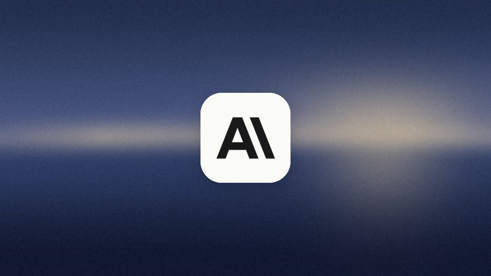
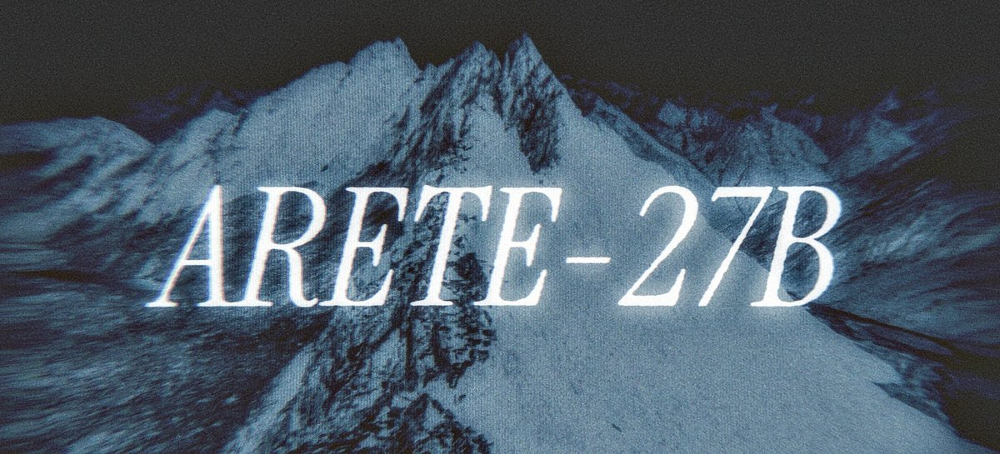

AI
Brief
Saturday edition
Claude Code's saved approvals leak secrets on GitHub
Also: Nous fine-tunes the state line out of Qwen, Huawei ships a work agent for HarmonyOS PCs, Microsoft's Agent Framework caps MCP discovery, and Kiro explains how it routes work between models.
What matters today

Saved approvals leak
Claude Code's saved approvals put secrets in public repositories.
- Apiiro's figures: "don't ask again" saves the approved command to
.claude/settings.local.json; 1,122 of 104,185 public copies hold 1,379 secrets. - What leaked: 379 database passwords, 43 SSH logins, 42 GitHub, GitLab and npm tokens, 23 AWS keys; gitleaks and TruffleHog both missed 215 files.
- Default: of 16 agents compared, only Claude Code saves the full approved command in a project file.
Why it mattersAn approval memory is a write path into the repository. Store the pattern a user allowed, not the command, keep the file out of version control, and scan agent folders like .env.

Values one tune away
Nous Research turns Qwen3.8-27B into Arete-27B (November 6).
- Method: supervised fine-tuning only, about 52.8 million tokens over 1,202 steps with Inkling as teacher; no RL; weights on Hugging Face under Apache 2.0.
- Result: on Nous's 803-prompt eval, state-framed answers fell from 22% to 1% and the fact score rose from 2.32 to 2.98 of 5; Hermes Bench 65.60% against the base's 65.77%.
Why it mattersThe values layer in an open model is thin and cheap to replace, either way. On open Chinese weights, test the framing yourself; on your own weights, assume a fine-tune can undo it.
Huawei office agent
Huawei releases Xiaoyi Work, an office agent for HarmonyOS PCs (November 6).
- What it does: one instruction for data analysis, slides or a weekly report; it plans the steps, calls tools and returns Word, PowerPoint and Excel files.
- Stage: out of beta as a standalone app in the HarmonyOS PC AppGallery; runs on a cloud PC or locally with user-reviewed checkpoints; a phone can dispatch tasks; paid in AI points.
Why it mattersThe office agent as an operating-system feature: execution chosen per task, a phone as the remote control, metered points instead of a seat. Watch the billing model more than the demo.
Agent Framework 1.25
Microsoft's Agent Framework 1.25 bounds MCP discovery and workflow scope.
- MCP: callable discovery approval policies honouring Foundry Toolbox metadata; discovery capped at 100 pages and 1,000 items per catalogue; 30-second default timeouts.
- Breaking: live workflow executors bind to one authorization scope and cross-scope calls are rejected before the model call; OpenTelemetry GenAI spans; Python 3.11 or later.
Why it mattersTreat tool discovery as an attack surface: cap the catalogue, time out the server, bind a running workflow to one principal. Defaults worth copying in any agent runtime.
Also in AI today
- Vercel: DeepSeek V4.1 Flash 1017 Ultrafast on AI Gateway through Fireworks, upwards of 1,000 tokens per second with a 1M-token context; public preview.
- Tencent DSpine: a five-layer draft model for Qwen3.8-27B under Apache 2.0; Tencent's figures: 2.7 to 3.8 times autoregressive throughput on agent benchmarks, ahead of DFlash2.
- xAI: text watermarking is on by default from November 7 for seven Grok models on the Responses and Chat Completions APIs; an x-watermark header marks it, and team admins can turn it off per model.
- Policy in China: draft interim measures from MIIT give every robot a unique product identification code across industrial, service and special-purpose categories; notice dated November 6, comments to December 5.
- OpenRouter (November 6): a rebuilt Auto Router, now live, weighs eleven request factors plus price and provider health; its figures put the new Auto Code level with Claude Opus 5.5 at 74% less per task.